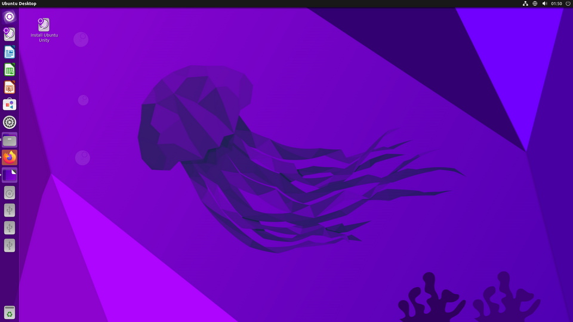

Barra de tarefas travada
O problema
A barra de tarefas (a faixa com o menu Iniciar e os programas abertos; no Ubuntu, o painel superior e o dock) para de responder aos cliques, os ícones somem ou ela fica congelada na tela, sem se esconder nem com um vídeo em tela cheia.
Possíveis causas
Na maioria das vezes, o processo responsável pela interface travou: o Windows Explorer (explorer.exe) no Windows ou o GNOME Shell no Ubuntu. Também pode ser uma atualização com falha, arquivos do sistema corrompidos ou um programa ou extensão que modifica a barra.

Solução no Windows
Abra o Gerenciador de Tarefas (Ctrl + Shift + Esc), clique com o botão direito em Windows Explorer e escolha Reiniciar. Se a barra não se esconde em tela cheia, normalmente algum programa está com o ícone piscando, pedindo atenção: abra esse programa. Confira também as opções em Configurações > Personalização > Barra de tarefas.
Se o problema voltar sempre, execute sfc /scannow e DISM /Online /Cleanup-Image
/RestoreHealth no Prompt de Comando como administrador. Se começou depois de uma atualização,
desinstale-a pelo histórico do Windows Update.
Solução no Linux
No Ubuntu com Xorg, aperte Alt + F2, digite r e pressione Enter para reiniciar o GNOME Shell
sem fechar os programas. No Wayland (padrão nas versões recentes) isso não é possível: encerre a sessão e
entre novamente. Se nem o mouse responder, aperte Ctrl + Alt + F3 para abrir um terminal de texto, faça
login e execute sudo systemctl restart gdm3 (o que fecha os programas abertos).
Se o problema começou depois de instalar uma extensão do GNOME, desative-a no aplicativo Extensões ou com
gnome-extensions disable nome-da-extensao.
Saiba mais
Veja também a página Notificações e Central de Ações travadas ou pesquise um dos tutoriais em vídeo abaixo: